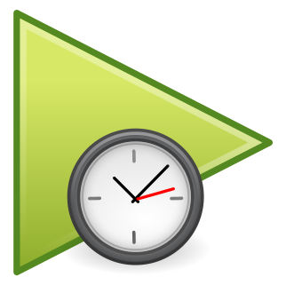

<!DOCTYPE html>

<!--
Copyright © 2012 Martin Puppe

This file is part of resumeLater.

resumeLater is free software: you can redistribute it and/or modify
it under the terms of the GNU General Public License as published by
the Free Software Foundation, either version 3 of the License, or
(at your option) any later version.

resumeLater is distributed in the hope that it will be useful,
but WITHOUT ANY WARRANTY; without even the implied warranty of
MERCHANTABILITY or FITNESS FOR A PARTICULAR PURPOSE.  See the
GNU General Public License for more details.

You should have received a copy of the GNU General Public License
along with resumeLater. If not, see <http://www.gnu.org/licenses/>.
-->

<html>
  <head>
    <meta charset="UTF-8">
    <title>Resume Later</title>

    <link href="panel.css" rel="stylesheet" type="text/css" media="all">

  </head>

  <body>
    <div class="wrapper">

      <menu id="videoList">

      </menu>

    </div>

    <footer>
      <hr />

      <div id="footerButtons">
        
      </div>
    </footer>

  </body>

</html>
